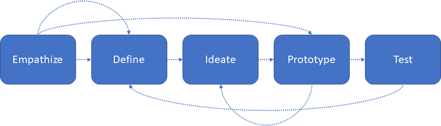

.png)

RoadEthos is a game based learning environment to sensitize students from middle school
on the ethical decisions to be made on road with empathy. This game is a car simulation
designed and developed using 3 affordable technologies - Scratch programming, Arduino
and Lego bricks.
The broad goal is to build empathy within students. Empathy is
one of the primary stages in design thinking. The following figure 1 is an overview of 5
stages in design thinking model proposed by Hasso-Plattner institute of design at
Stanford(d.school). (Plattner,2009; Plattner, 2010). Scholars (Baeck, & Gremett, 2012)
also emphasize on empathy as a characteristic of design thinking.

Figure 1: Model
of five stages in the Design thinking process
The game environment simulates real-life scenarios of driving a car using a Scratch
interface. It enables the students to control and respond to those scenarios using
steering and brake/acceleration made out of Lego bricks, connected via Arduino.
Cite as:Herold, P.C., Khwaja, U., Murthy, S., Dasgupta, C., (2019). RoadEthos: Game-based learning to sensitize children on road safety through ethical reasoning. In 2019 IEEE Tenth International Conference on Technology for Education (T4E). IEEE.
Abstract:
Road safety training programs focusing on
practical methods have been known to help novice drivers
acquire the knowledge and skills required to drive on the road
and improve their judgments. However, the attitude required
for safe behavior is often overlooked, leading to road mishaps.
This led us to study the ethical reasoning that influences people’s
attitude while taking a decision on the road. It is also reported
that road safety education should commence as early as the age
of 4-5 and needs to be pursued through primary and secondary
school. Hence, we designed and developed a game-based
learning environment, RoadEthos, using three technologies
(Scratch, Arduino, 3D printer) to sensitize children towards
road safety through ethical reasoning in road scenarios. The
design of the game and its scenarios are based on the theoretical
underpinnings of empathy and situated learning. This paper
reports the results and analysis of a study conducted with 5
students of the age group 10-12, where we captured students'
actions, decisions and their change in ethical reasoning, before
and after interacting with this game. The paper concludes with
the next steps for the project, in terms of its design and
implementation.